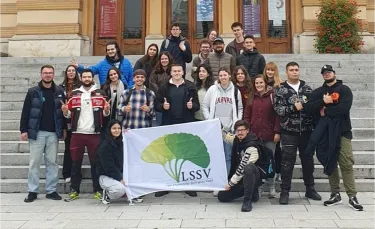
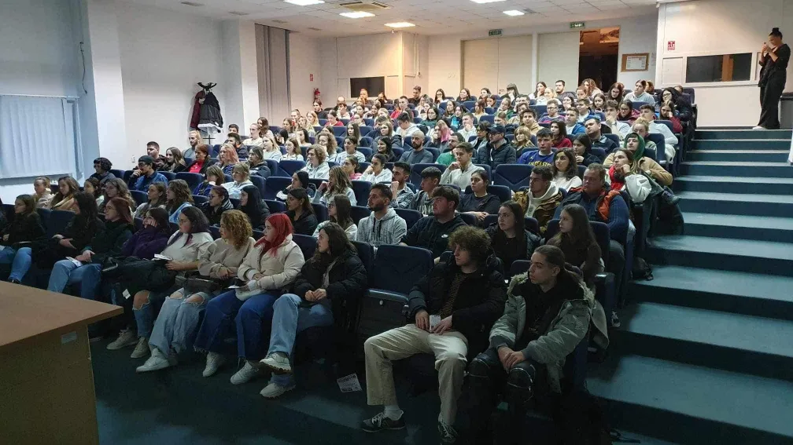
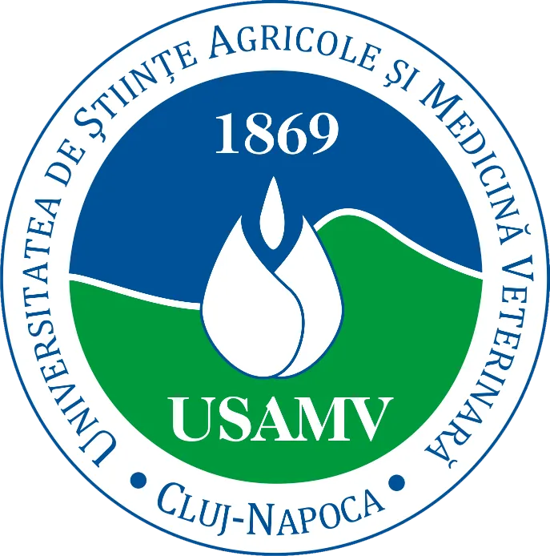
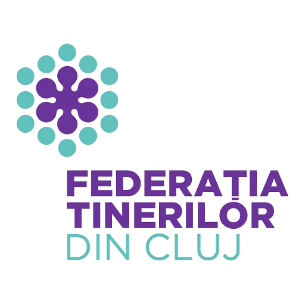
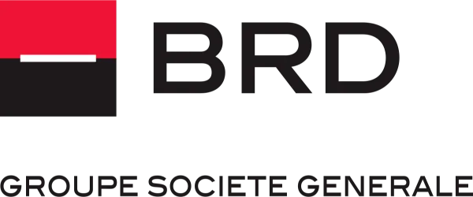
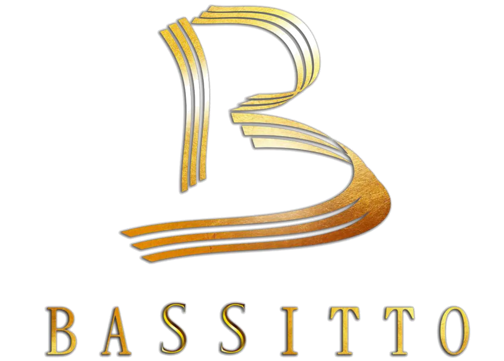

Construim Viitorul
Studenției
Suntem vocea studenților. Organizăm evenimente, încurajăm cercetarea și dezvoltăm abilități pentru o carieră de succes.
Despre Povestea Noastră
Liga Studenților
Științelor Vieții
Liga Studenților Științelor Vieții este o asociație care își desfășoară activitatea în scopul drepturilor și intereselor studenților din cadrul USAMV Cluj-Napoca. Astfel se dorește organizarea de evenimente care să încurajeze cercetarea științifică și pregătirea profesională, socială și culturală a membrilor săi.
Studenți ai Universității de Științe Agricole și Medicină Veterinară sunteți invitați să vă alăturați Asociației, împreună să punem bazele unui viitor mai bun!
Despre NoiDe ce Liga Studenților Științelor Vieții?
LSSV este o comunitate, oportunități de voluntariat, proiecte și evenimente care te pun în mișcare și evenimente care fac studenția mai vie. Un loc unde te implici, te dezvolți și te conectezi cu oameni ca tine.
Comunitate
Un loc unde găsești oameni ca tine — deschiși, implicați și gata să te ajute să te integrezi și să crești alături de ei.
Voluntariat
Îți poți pune ideile în practică, poți învăța lucruri noi și poți contribui concret la viața studenților din facultate.
Proiecte
De la proiecte sportive la seri tematice și acțiuni caritabile, LSSV îți oferă șansa să fii parte din proiecte cu impact real.
Evenimente
Participi, te distrezi, cunoști oameni noi și creezi amintiri — fiecare eveniment aduce ceva diferit și memorabil.

Comunitate
În LSSV, comunitatea înseamnă mai mult decât un grup de studenți adunați la aceeași universitate — este un spațiu în care oameni diferiți se regăsesc în valori comune și în dorința de a construi ceva împreună. Este locul în care îți găsești sprijin atunci când ai nevoie, unde legi prietenii naturale și unde te simți parte dintr-un colectiv care te încurajează, te inspiră și te primește exact așa cum ești.
Scop:
- • Acomodarea ușoară a voluntarilor în facultate, într-un mediu primitor și deschis.
- • Oferirea de sprijin și îndrumare sincere, care oferă încredere la fiecare pas.
- • Întâlnirea cu oameni care împărtășesc aceleași interese și cu care se pot conecta natural.
- • Clădirea unor relații calde și autentice, care să însoțească voluntarii pe tot parcursul facultății — și chiar dincolo de ea.
Voluntariat
Voluntariatul în LSSV înseamnă să fii parte din acțiuni care contează: fie că organizezi un eveniment, ajuți la un proiect caritabil sau coordonezi activități pentru colegi, fiecare contribuție este apreciată și are un impact real. Este și un spațiu de învățare, de dezvoltare personală și de descoperire a propriei creativități, dar și o oportunitate de a lega prietenii și conexiuni durabile cu studenți cu aceeași pasiune pentru implicare.
Mai mult
Proiecte
Proiectele noastre sunt create pentru a le oferi studenților experiențe relevante, ocazia de a învăța lucruri noi și de a lucra alături de oameni cu aceleași interese. Fiecare proiect aduce valoare reală, prin activități practice, ghidare și oportunități de dezvoltare personală. Ne propunem să construim un mediu în care inițiativa, creativitatea și colaborarea se transformă în rezultate vizibile.
Despre Proiecte
Evenimente
Evenimentele organizate de asociație creează spații în care studenții pot socializa, se pot implica și pot descoperi noi perspective. Sunt concepute pentru a aduce oamenii împreună, pentru a inspira și pentru a genera experiențe memorabile. De la workshop-uri și sesiuni interactive până la întâlniri informale, fiecare eveniment contribuie la construirea unei comunități active și conectate.
Despre EvenimenteMulțumim tuturor sponsorilor și partenerilor noștri!
În cadrul LSSV, credem în puterea ideilor care cresc atunci când sunt susținute cu încredere. Oferim studenților un mediu în care inițiativa, curajul și evoluția personală sunt încurajate în fiecare zi, astfel încât potențialul lor să se poată transforma în experiențe reale și valoroase. Suntem o comunitate dinamică și deschisă, în care sprijinul, colaborarea și dorința de a construi un viitor mai bun îi însoțesc pe studenți în fiecare pas.
Această viziune este posibilă datorită partenerilor noștri – USAMV, IVSA, USR și FTC – și sponsorilor BRD, See US Work & Travel și Bassitto, cărora le mulțumim pentru implicarea și încrederea lor. Împreună, creăm un mediu vibrant, inspirațional și plin de oportunități, în care fiecare student poate să se descopere, să crească și să strălucească.
Despre Partenerii Noștri
.webp)



